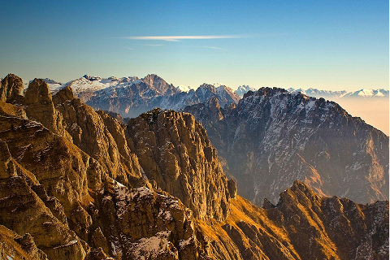

I Parchi
Scopri la biodiversità dei quattro parchi: il Gran Paradiso con i suoi ghiacciai e stambecchi, l’Etna con i crateri vulcanici e le ginestre, il Pollino con il pino loricato e i lupi, e le Dolomiti Bellunesi con le cime rocciose e le stelle alpine.